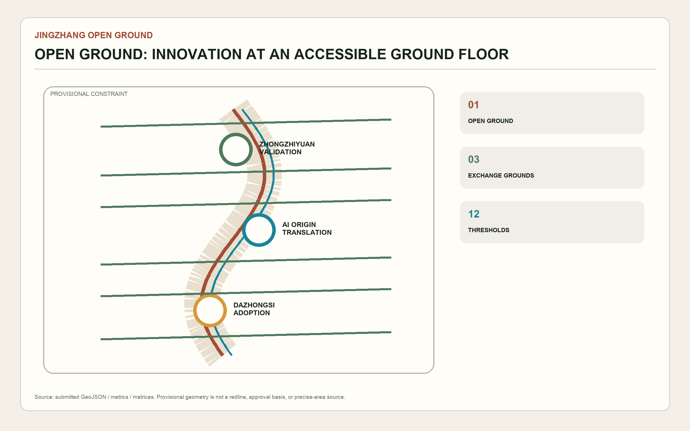
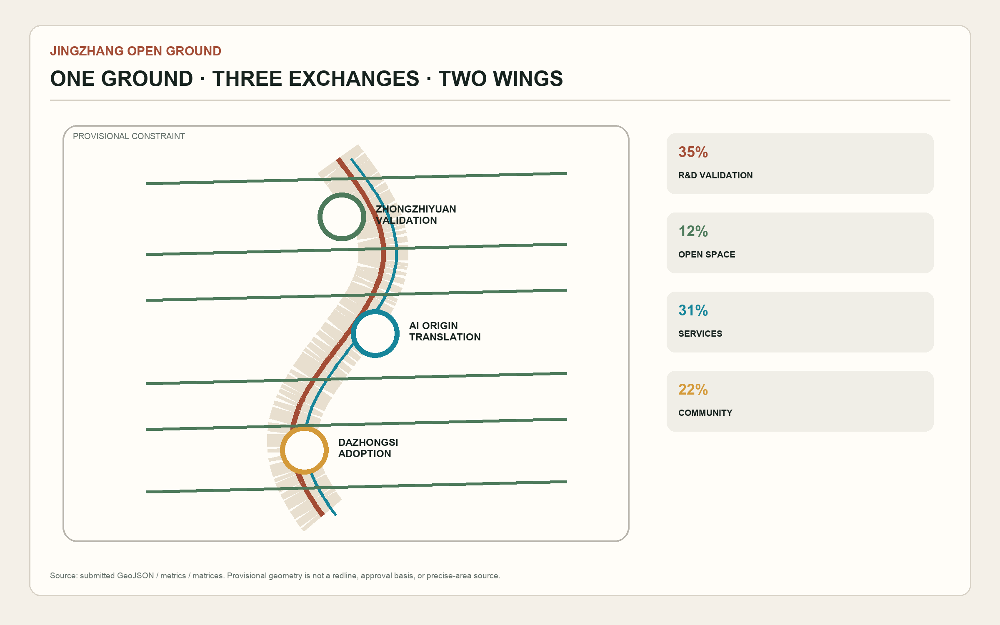
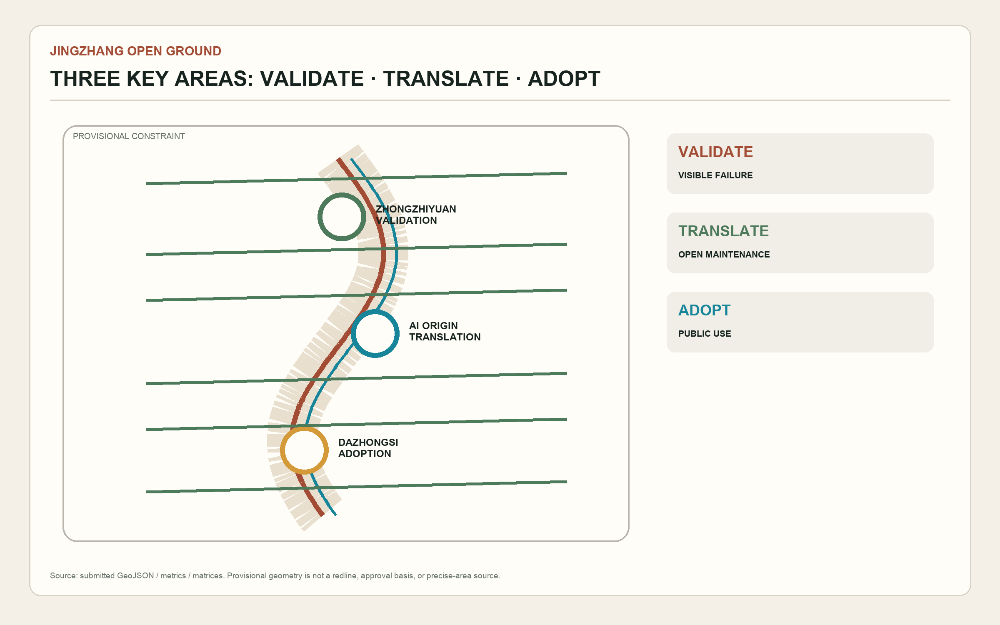
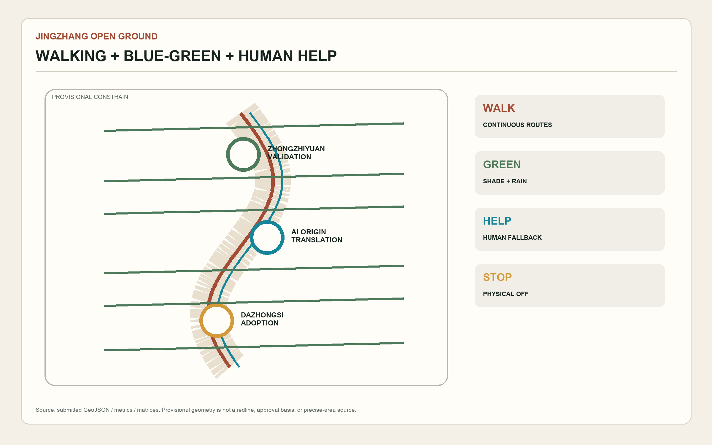
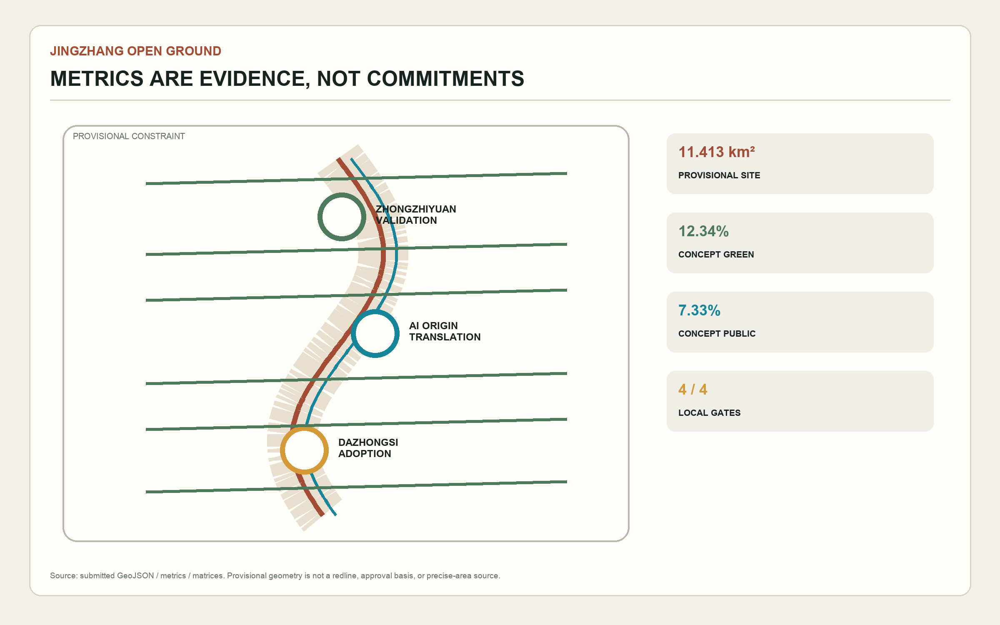

11.413 km²
12.34%
7.33%
Self-check
4 / 4 local gates targeted; PASS ≠ approval.





Task coverage
- Overview map
- Three scopes
- Key areas
- Land use
- Transport and walking
- Blue-green public space
- Buildings
- Renewal projects
- AI scenarios
- Core metrics
- Task coverage
- Self-check status
- Sources
- Assumptions
Sources
Official announcement; cleared taskbook; local standards; provisional geometry.
Assumptions
Provisional constraint: official geometry and professional confirmation are pending.